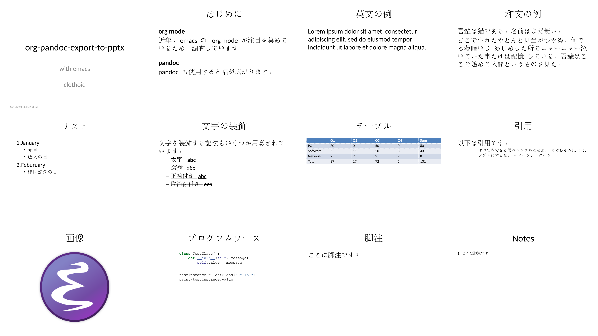

emacs の org-pandoc-export-to-pptx サンプル
1 環境
- GNU Emacs 25.1.1 (x86_64-pc-linux-gnu, GTK+ Version 3.22.11) of 2017-09-15, modified by Debian
- Org mode version 9.2
- pandoc 2.7.1
- Compiled with pandoc-types 1.17.5.4, texmath 0.11.2.2, skylighting 0.7.7
2 org ファイル
#+TITLE: org-pandoc-export-to-pptx #+DATE: <Sun Mar 24 11:03:01 2019> #+AUTHOR: clothoid #+LANGUAGE: ja #+SELECT_TAGS: export #+EXCLUDE_TAGS: noexport #+CREATOR: Emacs 25.1.1 (Org mode 9.1.13) #+DESCRIPTION: #+SUBTITLE: with emacs #+OPTIONS: ':nil *:t -:t ::t <:t H:3 \n:nil ^:t arch:headline #+OPTIONS: author:t #+OPTIONS: d:(not "LOGBOOK") date:t e:t email:nil f:t inline:t num:t #+OPTIONS: p:nil pri:nil prop:nil stat:t tags:t tasks:t tex:t #+OPTIONS: timestamp:t title:t toc:t todo:t |:t * はじめに ** org mode 近年、emacs の org mode が注目を集めているため、調査しています。 ** pandoc org だけでも十分な export 機能がありますが、pandoc も使用すると幅が広がります。 * リスト 1. January - 元旦 - 成人の日 2. Feburuary - 建国記念の日 * 文字の装飾 文字を装飾する記法もいくつか用意されています。 - *太字 abc* - /斜体 abc/ - _下線付き abc_ - +取消線付き acb+ * テーブル |----------+----+----+----+----+-----| | | Q1 | Q2 | Q3 | Q4 | Sum | |----------+----+----+----+----+-----| | PC | 30 | 0 | 50 | 0 | 80 | | Software | 5 | 15 | 20 | 3 | 43 | | Network | 2 | 2 | 2 | 2 | 8 | |----------+----+----+----+----+-----| | Total | 37 | 17 | 72 | 5 | 131 | |----------+----+----+----+----+-----| * 引用 以下は引用です。 #+BEGIN_QUOTE すべてをできる限りシンプルにせよ． ただしそれ以上はシンプルにするな． -- アインシュタイン #+END_QUOTE * プログラムソース #+BEGIN_SRC python class TestClass(): def __init__(self, message): self.value = message testinstance = TestClass("Hello!") print(testinstance.value) #+END_SRC * 画像 ./emacs.png * 脚注 ここに脚注です[fn:fntest] * Footnotes [fn:fntest] これは脚注です
{kind=link}
3 完成品の画像
